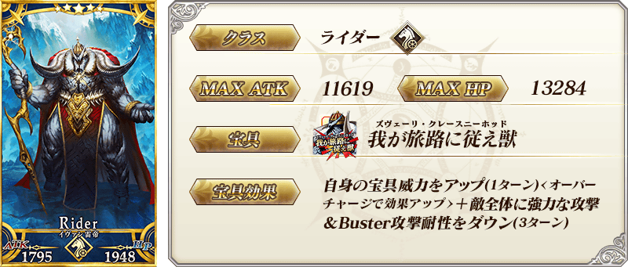
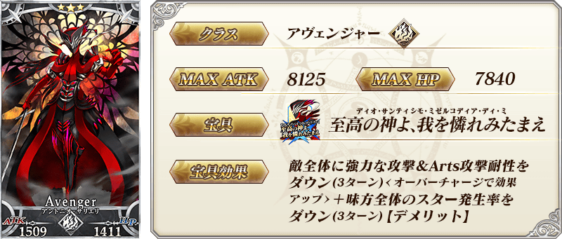
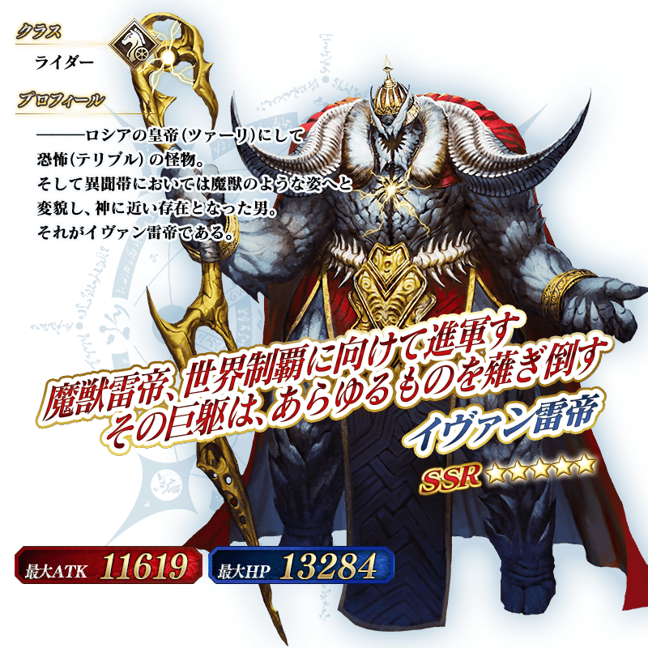
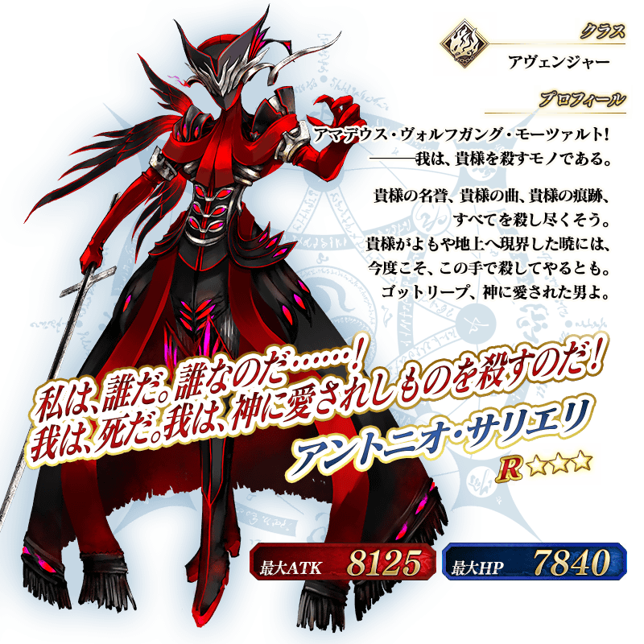

◆「安娜塔西亞Pick Up2召喚」期間◆
期間:2018年4月11日(三) 17:00～4月25日(三) 11:59
舉辦期間限定「安娜塔西亞Pick Up2召喚」！
※未到達第2部 第1章「Lostbelt No.1 永久凍土帝國 安娜塔西亞 獸國的皇女」的狀態也能進行「安娜塔西亞Pick Up2召喚」。
於第2部 第1章「Lostbelt No.1 永久凍土帝國 安娜塔西亞 獸國的皇女」登場的Servant「★5(SSR)伊凡雷帝」以期間限定登場！
另外，「★3(R)安東尼奧・薩里耶利」Pick Up！
※伊凡雷帝在Pick Up期間結束後不會追加到故事召喚。
※安東尼奧・薩里耶利為在Lostbelt No.1通過後追加到故事召喚的Servant。
※「安娜塔西亞Pick Up2召喚」中，安東尼奧・薩里耶利就算通過Lostbelt No.1前也能入手。
Pick Up期間中，期間限定Servant、Pick Up Servant的出現機率提升！
詳情請在聖晶石召喚畫面左下的召喚詳細確認。
10次召喚中確定1張★4(SR)以上和確定1位★3(R)以上的Servant！
※確定★4(SR)以上包含Servant和概念禮裝。




介紹安東尼奧・薩里耶利的寶具演出！
在「Fate/Grand Order」官方網站內的公告中公開了「★3(R)安東尼奧・薩里耶利」的寶具演出。敬請確認。